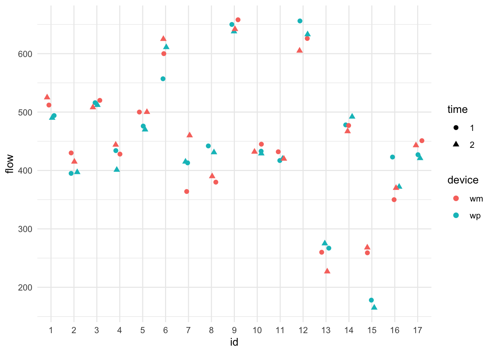

pefr = read.dta( "data/pefr.dta" )
head( pefr ) id wp1 wp2 wm1 wm2
1 1 494 490 512 525
2 2 395 397 430 415
3 3 516 512 520 508
4 4 434 401 428 444
5 5 476 470 500 500
6 6 557 611 600 625In this chapter we illustrate fitting a three level model (with clusters inside of clusters) and extracting the various components from it.
We illustrate on a dataset, peft.dta, extensively discussed in Rabe-Hesketh and Skrondal. I am replicating the model they propose in chapter 8.4. The story is as follows: the data set is a collection of measurements for a test-retest of two peak expiratory flow measurement devices (in English, patients were told to exhale into a device to measure their lung capacity, and they did so twice for two different measurement devices, so four times total). We want to understand whether the types of meter are different, and also understand variation in subjects lung capacities, and variation in the measurement error of the meters.
We are going to view this as three-level data. We have multiple measurements (time, level 1) nested inside device type (device, level 2) nested inside subject (level 3). We might imagine that different subjects have different lung capacities. We also might imagine that different subjects are going to have different biases when using the two different meters. The two observations for each meter allows us to understand the variability of measurements for a single meter for a given subject, and looking at how these vary across subjects allows us to understand how much the biases move across individuals.
We first load the data. In the following we load the data and look at the first few lines. We see that each subject had two measurements from the standard and from the mini Wright flow meter.
pefr = read.dta( "data/pefr.dta" )
head( pefr ) id wp1 wp2 wm1 wm2
1 1 494 490 512 525
2 2 395 397 430 415
3 3 516 512 520 508
4 4 434 401 428 444
5 5 476 470 500 500
6 6 557 611 600 625This section illustrates some advanced reshaping techniques. In particular we reshape the data twice to deal with the time and the device as different levels.
Here we go:
dat <- pefr %>%
pivot_longer(cols = c(wp1, wm1, wp2, wm2),
names_to = c( "device_time" ),
values_to = "flow" ) %>%
separate_wider_position( device_time,
widths = c( device = 2, time = 1 ) )
dat# A tibble: 68 × 4
id device time flow
<dbl> <chr> <chr> <dbl>
1 1 wp 1 494
2 1 wm 1 512
3 1 wp 2 490
4 1 wm 2 525
5 2 wp 1 395
6 2 wm 1 430
7 2 wp 2 397
8 2 wm 2 415
9 3 wp 1 516
10 3 wm 1 520
# ℹ 58 more rowsLet’s see what we got:
head( dat )# A tibble: 6 × 4
id device time flow
<dbl> <chr> <chr> <dbl>
1 1 wp 1 494
2 1 wm 1 512
3 1 wp 2 490
4 1 wm 2 525
5 2 wp 1 395
6 2 wm 1 430subset( pefr, id==1 ) id wp1 wp2 wm1 wm2
1 1 494 490 512 525We see the measurements correspond to the first row of the original pefr data.
Let’s also check our second person to see if the measurements have the appropriate labels. They do.
subset( dat, id==2 )# A tibble: 4 × 4
id device time flow
<dbl> <chr> <chr> <dbl>
1 2 wp 1 395
2 2 wm 1 430
3 2 wp 2 397
4 2 wm 2 415subset( pefr, id==2) id wp1 wp2 wm1 wm2
2 2 395 397 430 415Another sanity check:
table( dat$id )
1 2 3 4 5 6 7 8 9 10 11 12 13 14 15 16 17
4 4 4 4 4 4 4 4 4 4 4 4 4 4 4 4 4 We have four measurements, still, for each person.
When reshaping data, one typically has to fiddle with all of the commands and check the results a few times to get it right. ChatGPT or similar is really good at helping with this.
We can look at the data. The following illustrates getting different colors and symbols depending on covariate information:
dat$id = as.factor( dat$id )
dat$device = as.factor( dat$device )
dat$time = as.factor( dat$time )
ggplot( data=dat, aes( x=id, y=flow, col=device, pch=time ) ) +
geom_jitter( width=0.2, height=0, size = 2 ) +
theme_minimal()
We see lots of subject variation. It is unclear if one device is systematically higher or lower than the other, but it does look like the devices are often more similar to each other, indicating individual-level device bias.
Level 1: We have, for individual \(i\) using machine \(j\) at time \(t\):
\[ Y_{tji} = \beta_{0ji} + \beta_{1} t + \epsilon_{tji} .\] Note the using the subscript of time as a covariate. Some might prefer \(time_{tji} = 1\) and \(time_{tji}=2\) and then writing \(\beta_1 time_{tji}\).
The \(\beta_{1}\) allows for a time effect of the second measurement being systematically lower or higher than the first. We pool this across all subjects and machines.
Level 2: Our machine-level intercepts for each subject are
\[ \beta_{0ji} = \gamma_{0i} + \gamma_1 D_j + u_{ji} \]
with \(D_j = 1\{ j = wp \}\) being an indicator (dummy variable) for the second machine. The \(\gamma_1\) allows a systematic bias for the two machines (so the wp machine could tend to give larger readings than the wm machine, for example). Overall, the above says each machine expected reading varies around the subject’s lung capacity, but that these expected readings will vary around the subjects true capacity by the \(u_{ji}\). Actual readings for subject \(i\) on machine \(j\) will hover around \(\beta_{ji}\) if we had the subject test over and over, according to our model (not including fatigue captured by the time coefficient).
Level 3: Finally our subject intercepts are \[ \gamma_{0i} = \mu + w_{i} . \] The overall population lung capacity is \(\mu\). Subjects have larger or smaller lung capacity depending on their \(w_{i}\). This is the subject-to-subject variability.
The \(u_{ji}\) and \(w_i\) are each normally distributed, and independent from each other. The \(w_i\) are how the subjects vary (i.e., their different lung capacities). The \(u_{ji}\) are the individual biases of a machine for a given subject. Looking at our plot, we see that subjects vary a lot, and machines vary sometimes within a subject (the centers of the pairs of colored points tend to be close, but not always), and the residual variance tends to be small (colored points are close together). We should see this in our model output. Let’s find out!
We have a classic three-level model with time and device as covariates:
library( lme4 )
M1 = lmer( flow ~ 1 + device + time + (1|id) + (1|device:id), data=dat )
display( M1 )lmer(formula = flow ~ 1 + device + time + (1 | id) + (1 | device:id),
data = dat)
coef.est coef.se
(Intercept) 454.43 27.84
devicewp -6.03 8.05
time2 -1.03 4.37
Error terms:
Groups Name Std.Dev.
device:id (Intercept) 19.72
id (Intercept) 111.99
Residual 18.01
---
number of obs: 68, groups: device:id, 34; id, 17
AIC = 682.8, DIC = 709.1
deviance = 689.9 We interact device and id to generate unique ids for all the device groups nested within subject.
Now let’s connect some pieces: